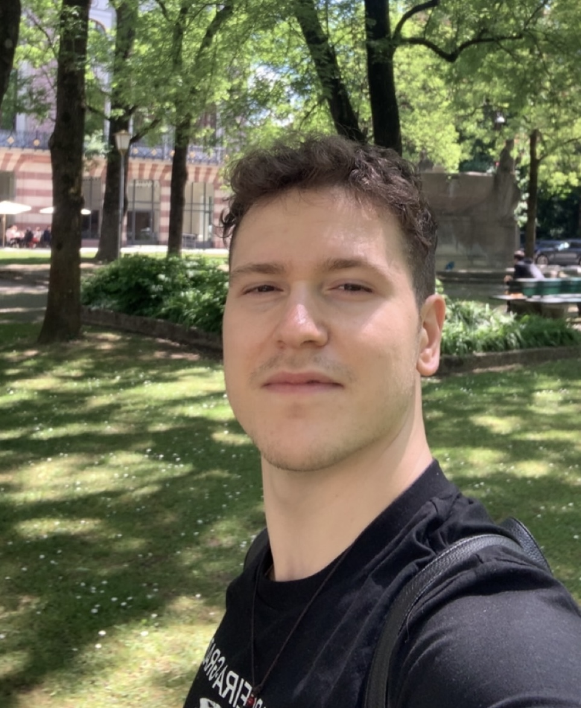
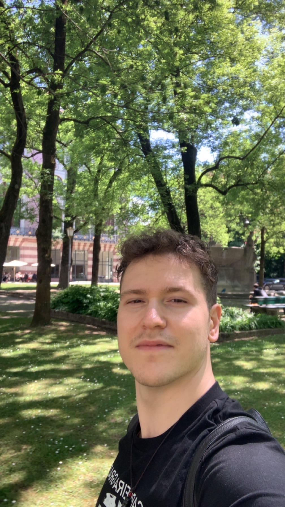

Computer scientist and software developer at TU Berlin, with a focus on AI, machine learning, and building real-world systems that are efficient, private, and useful.
// about me
I'm Yamaç, a 24-year-old MSc Computer Science student at TU Berlin, originally from Bursa, Türkiye. I grew up between cultures — earning my Abitur at Istanbul Erkek Lisesi before moving to Berlin in 2020.
My research sits at the intersection of privacy-preserving machine learning, small language models, and agentic systems. I'm drawn to the elegant math behind ML, and I believe the most impactful AI is small, auditable, and private.
Alongside my studies, I've worked as a software engineering working student — two years at HiQ Germany on backend and DevOps, and two years at SAP building AI infrastructure at scale. I also write on Medium, contribute to open source, and compete on Kaggle.

// research
// experience
// education
// projects
// skills
// writing
// contact

When I'm not at a keyboard, I'm probably here.
Whether you're a collaborator, a recruiter, or just curious about my work — my inbox is open.
yamaceay@gmail.com